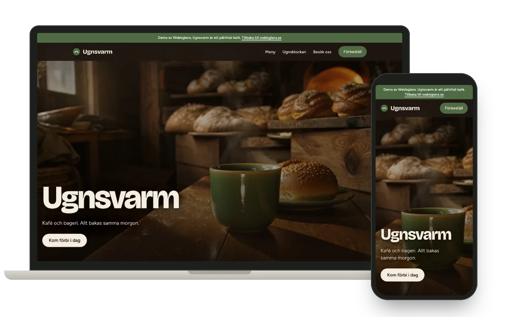
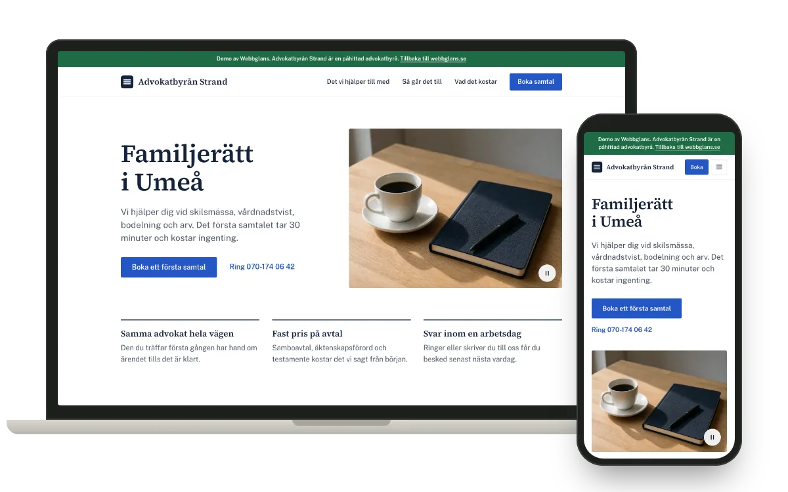

Demo
Ugnsvarm, kafé och bageri
Kreativ och varm. Bilden överst följer skrollen, från ugnen som tänds till kaffet på bordet.
Öppna kafédemonVi rustar upp sajten ni redan har, i den plattform ni redan använder. Ni behåller innehåll, domän och inloggning. Det som ändras är hur sajten ser ut och hur snabbt den laddar.
Vi har byggt två exempel i helt olika stil, så att ni kan se vad som går att göra. Företagen finns inte på riktigt och bilderna är AI-genererade.

Kreativ och varm. Bilden överst följer skrollen, från ugnen som tänds till kaffet på bordet.
Öppna kafédemon
Stilren och tydlig. Allt på sidan leder till att besökaren bokar ett första samtal.
Öppna advokatdemonInnehåll, domän och plattform finns redan. Ofta är det formen som har åldrats, inte verksamheten.
Otydliga rubriker, tunga bilder och knappar som ingen ser. Vi går igenom både utseende och teknik och prioriterar.
Färger, typsnitt och bilder som passar er, och rörelse där den hjälper. Sajten ska kännas som ert företag, inte som en mall.
Snabbare, tydligare och lättare att använda. Vi visar skillnaden med PageSpeed och WAVE och går igenom resultatet med er.
Siffrorna kommer från PageSpeed och WAVE. Så här kan de se ut efter en upprustning.
Visar hur snabbt sajten känns i mobilen. Varje extra sekund får fler besökare att ge upp innan sidan ens syns, och Google väger in samma mått när de rangordnar sökresultat.
För er: fler som stannar kvar, och bättre chans att synas när någon söker.
Hittar det som stänger ute besökare: för svag kontrast, bilder utan beskrivning och knappar som inte går att nå med tangentbord eller skärmläsare.
För er: en sajt som fungerar för alla. För offentlig sektor är det lagkrav, och sedan 2025 gäller krav även för många tjänster mot konsumenter.
Siffrorna ovan är exempel på hur mätvärdena kan se ut. Er kostnadsfria granskning visar era egna värden.
Google PageSpeed på mobil. Uppmätt november 2026.
Undrar ni vad er sajt får? Vi mäter den gratis och förklarar vad siffrorna betyder. Kostnadsfri granskning
Hantverkare, butiker, kaféer och byråer som vill att sajten ger fler kunder.
Idrott, kultur och organisationer som vill bli lättare att hitta, förstå och engagera sig i.
Verksamheter med krav på tillgänglighet (WCAG) och tydlig information för alla.
Fast pris från 4 000 kr + 1 000 kr per sida. Först gör vi en kostnadsfri snabbgranskning, sedan bestämmer ni om ni vill gå vidare.